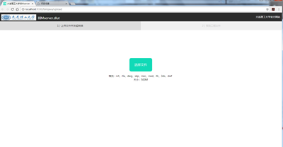
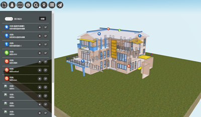

-
- Basic info. 基本信息
- 个人信息: 吴峥
- 民族: 汉族
- 籍贯: 湖南
- 政治面貌: 预备党员
- GitHub: www.github.com/wuzheng0709
-
- Education. 教育背景
- 2015.9—2018.6 大连理工大学（985、211） 管理科学与工程（工程管理）(10%) 工学硕士
- 2011.9—2015.6 大连理工大学（985、211） 管理科学与工程（工程管理）(5%) 管理学学士
- 本科阶段学习成绩优且综合素质各项评定优秀，免试保送至大连理工大学攻读硕士学位
-
- Academic. 学术研究
“十三五”国家重点研发计划项目“绿色施工与智慧建造关键技术”
-
2016.9 至今
开展BIM与传感器、移动通讯、无线射频及二维码识别等物联网技术在工程项目管理中的集成应用研究，充分发挥物联网技术在工程建设管理及设施运行监控等方面的作用，解决物联网信息与BIM模型集成问题，我主要工作是设计一个基于BIM（Building Information Modeling）的绿色施工云计算管理系统，（1）用思维脑图软件分析产品功能模块，分析产品细节，产品框架设计（2）分析用户使用场景与用户需求（3）使用visio绘制产品流程图，熟悉产品业务流程，参照实际产品用Axure设计低保真原型图（4）利用webGL和three.js的实现3D模型的展现，集成传感器数据信息到3D建筑模型;
 
大连市大连湾跨海交通工程项目社会稳定风险分析评价
-
2016.8—2017.4
通过社会调查收集问卷数据，参与大连湾跨海交通工程项目社会稳定风险分析评价工作，在调查过程中，学会了如何与政府部门沟通、如何与人民群众沟通等，通过专家打分的方法，确立风险分析指标库，利用SPSS分析数据，利用AHP层次分析法和BP神经网络建立风险分析模型并且应用到大连湾跨海交通工程项目社会稳定性风险分析中。
其他项目经历
-
2017年4月
英国BuildingSmart组织与中国交通建设集团国际合作项目：前期对相关主题进行调研，如BIM水运软件发展现状，BIM商业模式、BIM合同管理模式、BIM数据安全风险、国外基础设施水运BIM框架、后期负责关于基础设施水运BIM标准编制。
-
2016年7月
翻译英国标准BSI_PAS_1192_4_2014 collabrative product of information
-
2016年5月
参与大连理工大学《BIM施工管理与应用》教材的编写
-
2015年11月
协助翻译BIM Handbook一书
-
- Experience. 项目与工作经验
北京吉威时代股份有限公司（2016.7 - 2016.11）
-
代码审查云平台项目
负责Linux phabricator服务器云平台搭建, 项目采用Web代码托管的形式，运行在Linux apache上，实现代码事前和事后审查环节，改善公司svn代码审查系统
-
MongDB分布式数据库项目
搭建MongoDB分布式集群，搭建地理信息服务平台，应用于公司数据系统，并进行相关大数据分析，如土地调查与监测，数据综合监管分析等，使用MongoDB和Redis做数据存储和缓存，最后用MongoDB、Redis、CouchDB、PostgreSQL进行效率比较分析
丁香园（2015.10 - 2015.11）
-
微信HTML小游戏开发
使用白鹭引擎封装的WebGL和Canvas制作丁香园游戏类活动：中秋节吃月饼活动HTML5活动页面、调脂大作战（使用微信访问） 等
个人项目
-
music Player音乐播放器 源代码
HTML5音乐播放器，支持歌词、播放列表、播放模式（循环播放、随机播放等），兼容现代浏览器和移动端，API丰富、可扩展性强，Typecho、Hexo、WordPress 平台插件支持

-
Video player视频弹幕播放器 源代码
HTML5视频弹幕播放器，兼容 hls.js 和 flv.js，兼容现代浏览器和移动端，兼容 bilibili 弹幕，API 丰富、可扩展性强，Typecho、Hexo、Z-BlogPHP、WordPress、Discuz!平台插件支持
弹幕后端使用Node.js 编写，数据库使用MongoDB，缓存使用Redis，使用pm2部署并支持 Docker，有日志记录功能，可以解析 bilibili 弹幕和视频直链
前端使用原生js编写，无任何依赖，使用webpack和sass构建
-
微信公众号开发 源代码
关于一个微信公众号的运营，出发点是充分发挥自己软件研发方面的特长，同时又能通过运营公众号作为自己的一次营销经历。具体是建立一个交通 专业的公众交流平台，通过自己建立数据词库，并且将词库通过有道API开发接口加入到有道词库中，实现交通专业英文学术词汇学习和查询功能，相关技术文档的私人学习教程，会发布一些交通专业相关发展新闻等等。结果是2个月，关注总人数达到了2000+人。
-
Node.js小程序开发
数据库使用MongoDB，缓存使用Redis，使用pm2部署并支持Docker，有日志记录功能
-
- Skill. 技能清单
前端开发
-
HTML/CSS
能够编写简单的HTML和CSS模块
了解Sass、Autoprefixer等CSS预处理和模块化工具
-
JavaScript
熟悉原生Javascript，熟悉Webpack等前端自动化工具
能运用模块化、面向对象的方式编程
了解jQuery的使用
后端开发
-
Node.js
了解Node.js的开发，使用MongoDB和Redis做数据存储和缓存，使用pm2和Docker部署
开发语言
-
开发语言Java、C++
有一些面向对象开发的经验
语言技能
-
英语
CET6（463）
BIM技能
-
Revit
Navisworks
XBIM
BIMserver
其他技能
-
数据分析
了解Python自然语言处理、SPSS数据分析
-
- Award. 荣誉证书
-
2016年10月，获全国BIM龙图杯创新设计大赛三等奖
2016年10月，获大连理工大学校级“优秀学生干部”荣誉称号
2016年4月，获校研究生数模大赛三等奖
2015年12月31日，获硕士研究生一等奖学金
2014年4月-2014年6月，获全国大学生交通科技大赛二等奖
2012年12月，参加全国大学生数学建模竞赛，获辽宁省赛区二等奖
2012年10月，获大连理工大学校级“三好学生”荣誉称号
2012年10月，获校社会实践奖学金